Kasai, Hyogo: things to do, food and stays
Kasai · Hyogo
Kasai
Highlighted on the Hyogo map.
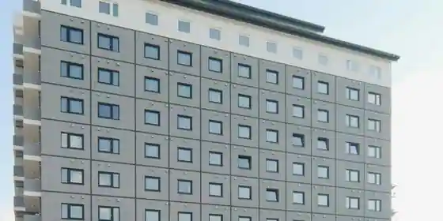
Stay
ホテルルートイン加西 北条の宿
Hotel Route Inn Kasai Hojo No Yado
Hotel in Hojo, Kasai with buffet meals and breakfast available.
ＨＯＴＥＬ Ｒ９ Ｔｈｅ Ｙａｒｄ 加西
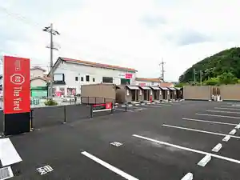
HOTEL R9 The Yard Kasai
いこいの村はりま
Ikoino Mura Harima
青野運動公苑 アオノスポーツホテル
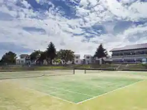
Aono Undo Koen Aonosupotsu Hotel
Dining
がいな製麺所
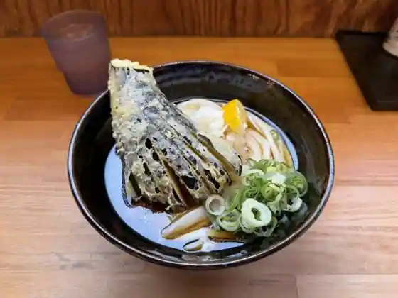
Gaina Seimen Tokoro
らぁめん 麺屋 秀
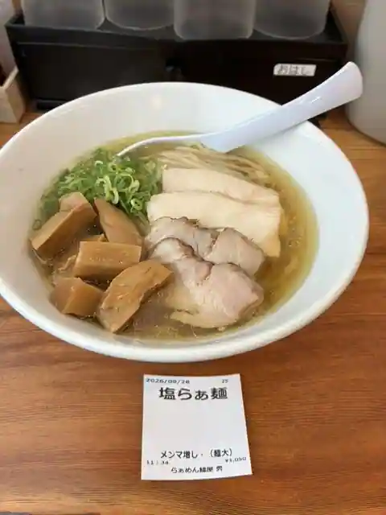
Ramen Men Ya Shu
麺匠 柳
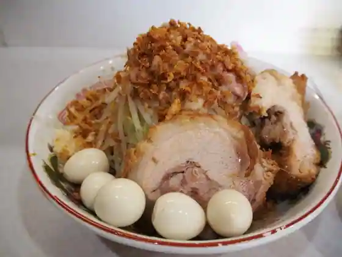
Men Takumi Yanagi
パン処 森庵
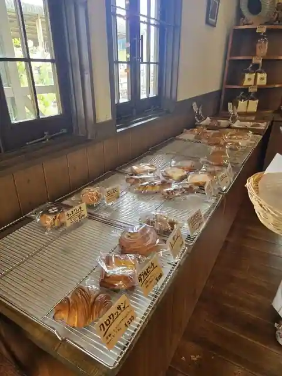
Bakery Tokoro Mori Iori
ふく蔵
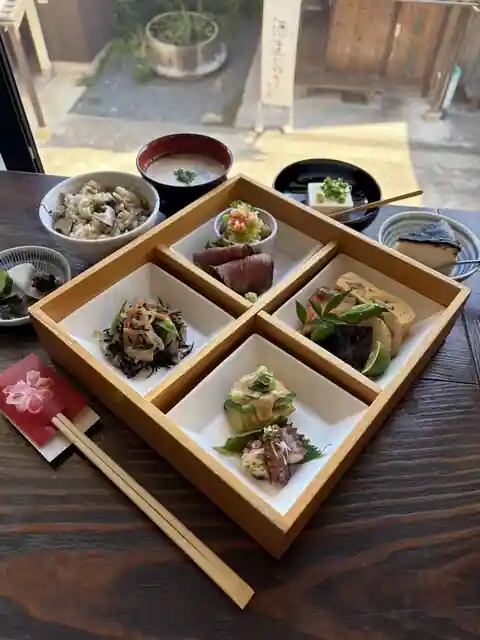
Fuku Kura
狛犬GELATO
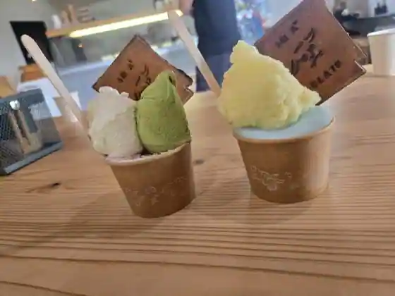
Komainu GELATO
加西サービスエリア（下り線）レストラン
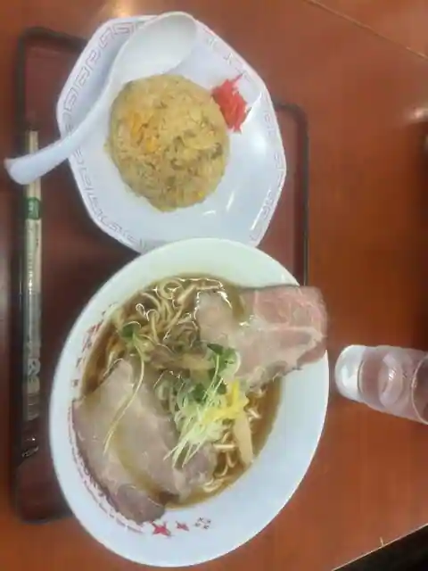
Kasai Sabisueria (Kudari Sen) Restaurant
Ramen Dream 桐麺
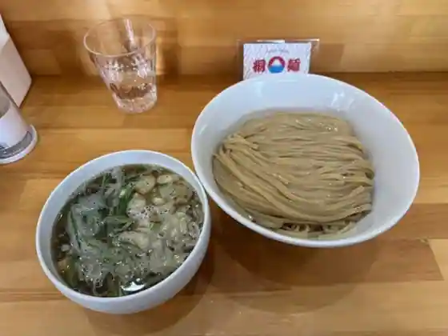
Ramen Dream Kiri Men
フレッシュベーカリー・グリム
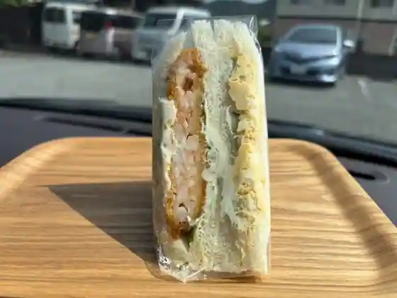
Furesshu Bakery Gurimu
上海
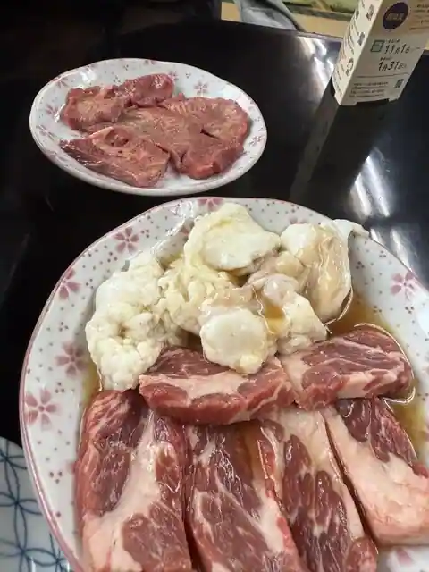
Shanhai
とんかつ うどん 官兵衛
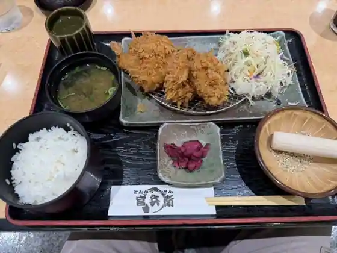
Tonkatsu Udon Kanbe
Cafe&diner West
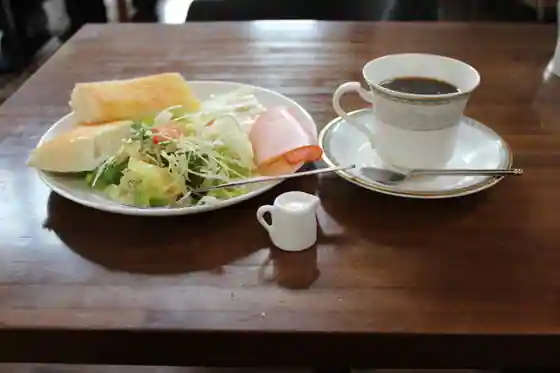
Cafe&diner West
本場札幌ラーメン 味噌専門 七福
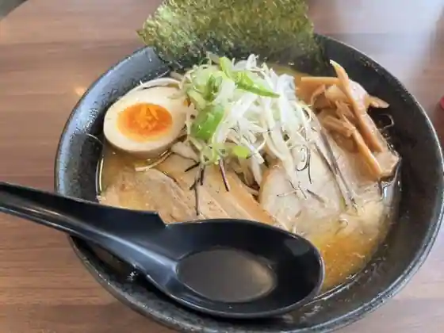
Honba Sapporo Ramen Miso Senmon Shichi Fuku
デルパパ
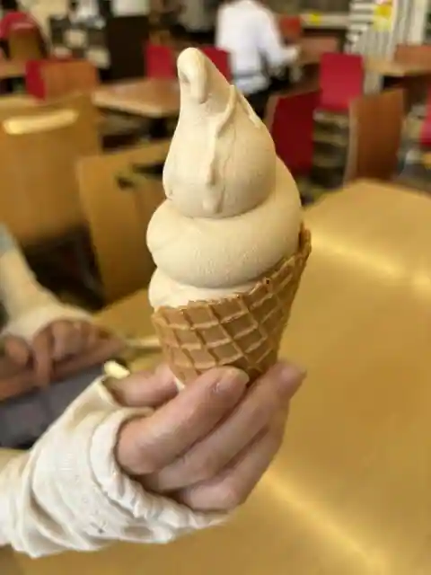
Derupapa
果樹花ふぁーむ
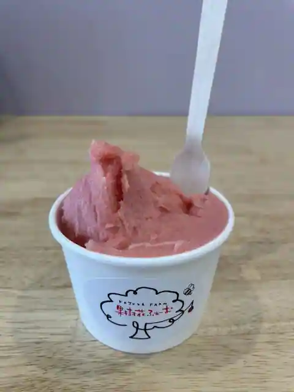
Kaju Hana Famu
428
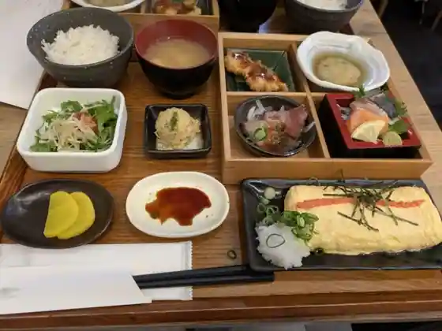
428
中華料理てんぐラーメン
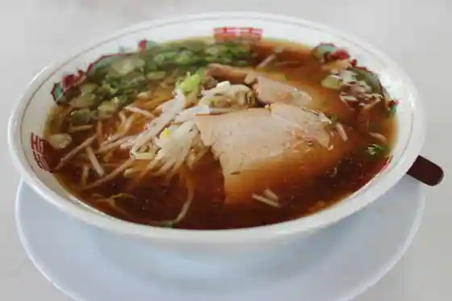
Chukaryori Tengu Ramen
はりまのちっちゃな台所
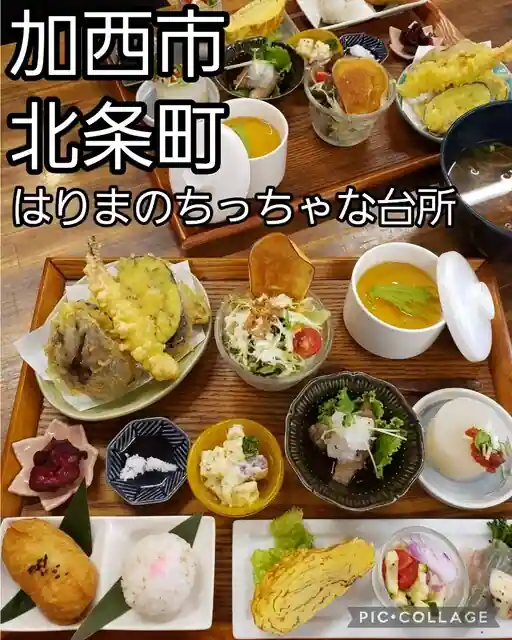
Harimanochitchana Daidokoro
バス ストップ
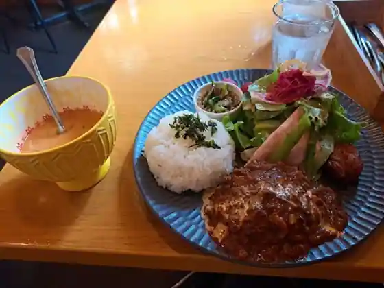
Basu Sutoppu
ろまんす亭
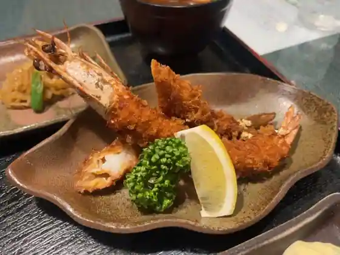
Romansu Tei
〆そば屋 播州吉田家 加西店
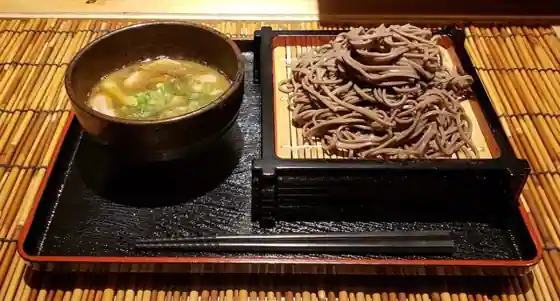
(Sime) Soba Ya Banshu Yoshida Ie Kasai
五福飯店
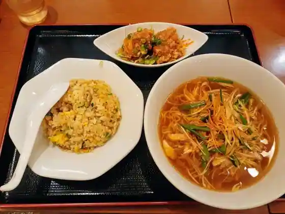
Gofuku Meshi
カフェ ド ブラット
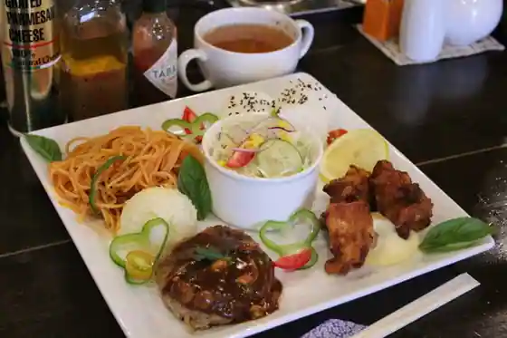
Cafe Do Buratto
お好み焼 とよだ
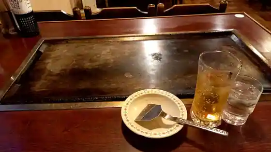
O Konomi Yaki Toyoda